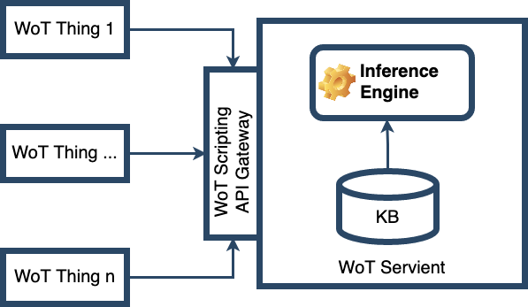
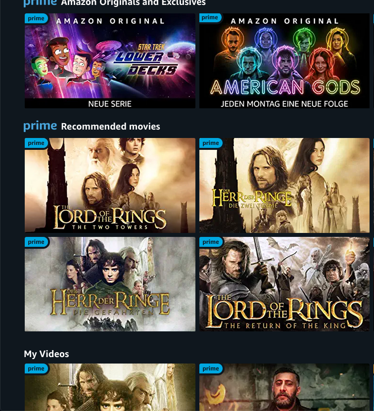

Argumentation-based Dialogues and their Application to Interactive Intelligent Systems
Juan Carlos Nieves and Timotheus Kampik
#### Agenda
* Introduction to Dialogues and Argumentation
* Activity-centered Perspective
* Software Systems-oriented Perspective
* Formal Foundations of Argumentation Dialogues
* Applications
* Applications and Limitations
* Engineering Tutorial
* A look ahead
#### Introduction
* Juan Carlos
* Associate Professor, Umeå University
* PhD from Universitat Politècnica de Catalunya
* Research interests: automated reasoning, logic programming, responsible AI, ...
* Timotheus
* 4th year PhD Student, Umeå University
* *Scientist in Residence/Product Lead* at Signavio/SAP BPI
* Research interests: automated reasoning, engineering intelligent systems...
#### What this tutorial is not about
This tutorial is not (primarily) about
* Natural language dialogues
* Natural language argumentation
* This tutorial attempts to bridge theoretical and applied perspectives;
a more 'classical' (and very good) tutorial by Simon Parsons is [available online](https://ssa2020.dmi.unipg.it/program.html)
Some perspectives we provide are **novel** and **opinionated/subjective**.
We attempt to identify challenges and opportunities to motivate new research.
#### Related AAMAS events
* Explainable AI [Industry Panel](https://extraamas.ehealth.hevs.ch/panel.html)
3rd of May, 16:45 - 17:45 (Berlin/Paris CEST)
* EXTRAAMAS [Logic and Argumentation Keynote](https://extraamas.ehealth.hevs.ch/program.html) by Dov Gabbay
4th of May, 09:30 - 10:15 (CEST)
* Ericsson Research [Explainable Machine Reasoning Tutorial](https://www.ericsson.com/en/reports-and-papers/research-papers/aamas-2021-tutorial)
4th of May, 09:30 - 13:30 (CEST)
* EXTRAAMAS [Logic and Argumentation Session](https://extraamas.ehealth.hevs.ch/program.html)
4th of May, 15:30 - 16:45 (CEST)
Introduction to Dialogues and Argumentation
-
Activity-centered Perspective
#### A Dialogue as an Activity
* Any activity is motivated by a **need** (*activity theory*)
* A dialogue emerges from a need
* To get a drink
* To get to know someone
* To agree on the terms of a contract
#### A Dialogue as an Activity
* The need of a dialogue defines the **goals** of the dialogue
* The goals usually define the **topic** of a dialogue
* Agents try to achieve goals by issuing *utterances* (aka *speech acts*)
A Dialogue as an Activity
Adapted from Kaptelini and Nardi. *Acting with technology: Activity theory and interaction design*. 2006.
Utterances: Does a Dialogue Require Words?
#### Typology of Dialogues
* Information-seeking dialogues
* Inquiry dialogues
* Persuasion dialogues
* Negotiation dialogues
* Deliberation dialogues
* Eristic dialogues
Walton and Krabbe. *Commitment in Dialogue: Basic Concepts of Interpersonal Reasoning*. 1995.
#### Settings of a Dialogue
* Initial situation
* Private aims of the participating agents
* Joint aims and overarching motivation to conduct the dialogue
#### Arguments
* An **argument**: A reason or reasons why you support or oppose an idea or suggestion, or the process of explaining these reasons.
-- *Cambridge Dictionary*
* A dialogue is based on arguments
* These arguments can be of different forms
* The strategy of construction arguments depends on the specification language (of the knowledge base)
#### Protocols of a Dialogue
* **Turn-making function**: determines which agent should make an utterance at any point in a dialogue
* **Legal-move function**: determines which utterances agents can make during dialogues
* **Outcome function**: determines whether dialogues have desirable properties
Fan & Toni. A general framework for sound assumption-based argumentation dialogue. 2014.
Introduction to Dialogues and Argumentation
-
Engineering-oriented Perspective
Real-world Intelligent Systems
 #### Intelligent System Landscapes
* We do not have merely one intelligent system,
we have **intelligent system landscapes**
* (IT) systems interact with other internal systems, external systems, and humans
#### Intelligent System Landscapes
* We do not have merely one intelligent system,
we have **intelligent system landscapes**
* (IT) systems interact with other internal systems, external systems, and humans
Real-world Oriented Abstractions and Dialogues
Is it only this?
Real-world Oriented Abstractions and Dialogues
Customer journeys
Real-world Oriented Abstractions and Dialogues
Business processes
#### Real-world Oriented Abstractions and Dialogues
More abstractions:
* User stories
* Jobs-to-be-done (Clayton Christensen. *Competing Against Luck*)
* Clinical pathways
Lindgren, Kampik, Guerrero, Blusi, Nieves. *Argumentation-based Health Information Systems: A Design Methodology.* 2021.
#### Typology of Dialogues in Software Systems
* Reminder: *deliberation*, *persuasion*, *negotiation*, *eristic*, etc.
* We cannot always design a system to fit a specific dialogue type
* But we typically want to avoid some types of dialogues
In particular: eristic dialogue
#### Settings of a Dialogue in a Software System
* Reminder: initial state, private objectives, joint aims, ...
* We can only model a subset of these settings
#### Topics and Utterances
Consider a customer journey, *e.g.*, the customer onboarding journey, retail banking, mortgage
What could be a **topic** and what could be an **utterance**?
#### Real-world Oriented Abstractions and Dialogues
**Claim**: By considering parts of customer journeys, business processes et cetera
**formal dialogues**,
we can create intelligent systems that are
* more **reliable**,
* more **transparent**, and
* economically better **scalable**.
#### Real-World State of the Art
I am a software systems manager.
Why would I want deploy a defeasible reasoning system?
#### Real-World State of the Art
Why would I want deploy a defeasible reasoning system?
* Conciseness
* Conflicts as first-class abstractions
Lindgren, Kampik, Guerrero, Blusi, Nieves. *Argumentation-based Health Information Systems: A Design Methodology.* 2021.
#### Real-World State of the Art
I am a software engineer.
How can I deploy a defeasible reasoning system?
Real-World State of the Art
Real-World State of the Art
#### Real-World State of the Art
What are the limitations of these systems?
Example: limited completeness checks.
Calvanese *et al*. *Semantics and Analysis of DMN Decision Tables*. 2016.
Break
Questions/Discussion
#### Argumentation using Classical Logic
Possibly inconsistent knowledge base $\Sigma$, propositional language ${\cal L}$.
An argument is a pair $A = (H, h)$, where $h$ is a formula of ${\cal L}$ and $H \subseteq \Sigma$, s.t.:
* $H$ is consistent;
* $H \vdash h$;
* $H$ is minimal.
$H$ is called the support of $A$, denoted by $S(A)$ and $h$ is the conclusion of $A$, denoted by $C(A)$.
Gorogiannis and Hunter. *Instantiating abstract argumentation with classical logic arguments: Postulates and properties.* 2011.
#### Example
Let $\Sigma = \\{\neg c, a, a \land c \rightarrow b, c\\}$.
* $A_1 = \langle \\{\neg c\\}, \neg c \rangle$
* $A_2 = \langle \\{c\\}, c \rangle$
* $A_3 = \langle \\{a\\}, a \rangle$
* $A_4 = \langle \\{c\\}, \neg b \rangle$
#### Conflicts between Arguments
Let ${\cal A}$ be the space of all arguments. We have an **attack function** $D: {\cal A} \times {\cal A} \rightarrow \\{ \top, \bot \\}$
Gorogiannis and Hunter. *Instantiating abstract argumentation with classical logic arguments: Postulates and properties.*
#### Conflicts between Arguments
Let $A, B$ be arguments.
The following attack functions list the conditions under which $D(A, B) = \top$.
* $D_D$: $A$ is a **defeater** of $B$ iff $C(A) \vdash \neg \bigwedge S(B)$.
* $D_{DD}$: $A$ is a **direct defeater** of $B$ iff there exists $a \in S(B)$, s.t. $C(A) \vdash \neg a$.
* $D_{U}$: $A$ is an **undercut** of $B$ iff there exists $b \in S(B)$, s.t. $C(A) \equiv \neg \bigwedge b$.
* $D_{DU}$: $A$ is a **direct undercut** of $B$ iff there exists $c \in S(B)$, s.t. $C(A) \equiv \neg c$
* $D_{CU}$: $A$ is a **canonical undercut** of $B$ iff $C(A) \equiv \neg \bigwedge S(B)$.
* $D_{R}$: $A$ is a **rebuttal** of $B$ iff $C(A) \equiv \neg C(B)$.
* $D_{DR}$: $A$ is a **defeating rebuttal** of $B$ iff $C(A) \vdash \neg C(B)$.
#### From Knowledge Base to Argumentation Framework
Let $\Sigma$ be a (possible inconsistent) knowledge base containing formulas of a propositional language ${\cal L}$.
Let $A_{\Sigma}$ be the set of arguments constructed from $\Sigma$.
We define $AT_{\Sigma} = \\{(A, B)|A, B \in A_{\Sigma} \text{ and } D(A, B) = \top \\}$.
$(A_{\Sigma}, AT_{\Sigma})$ is the argumentation framework $AF_{\Sigma}$ that has been constructed from $\Sigma$.
#### Example
Let $\Sigma = \\{\neg c, a, a \land c \rightarrow b, c\\}$.
* $A_1 = \langle \\{\neg c\\}, \neg c \rangle$
* $A_2 = \langle \\{c\\}, c \rangle$
* $A_3 = \langle \\{a\\}, a \rangle$
* $A_4 = \langle \\{c\\}, \neg b \rangle$
$AF_{\Sigma} = (\\{A_1, A_2, A_3, A_4\\}, \\{(A_1, A_2), (A_1, A_4), (A_2, A_1)\\})$
Example
$AF_{\Sigma} = (\\{A_1, A_2, A_3, A_4\\}, \\{(A_1, A_2), (A_1, A_4), (A_2, A_1)\\})$
Note that this was just an example.
Argumentation frameworks can be constructed in many other ways.
#### Who defines what an argument and an attack is?
* Somebody needs to do it (similar to labeling in supervised learning)
* Do we have a KB of propositional statements?
* The problem is *domain*-specific
* Application developers
* Knowledge engineers
* End-users
Lindgren, Kampik, Guerrero, Blusi, Nieves. *Argumentation-based Health Information Systems: A Design Methodology.* 2021.
#### Abstract Argumentation
Argumentation framework $AF = (AR, AT)$, s.t. $AT \subseteq AR \times AR$. Let $a, b \in AR, S \subseteq AR$.
* $a$ **attacks** $b$ iff $(a, b) \in AT$
* $S$ **attacks** $a$ iff $c \in S$ s.t. $(c, a) \in AT$
* $a$ **attacks** $S$ iff $d \in S$ s.t. $(a, d) \in AT$
* $S$ **defends** $a$ iff $S$ attacks all arguments in $AR$ that attack $a$
* $S$ is **conflict-free** iff $\not \exists e, f \in S$ s.t. $e$ attacks $f$
Abstract Argumentation
Given an argumentation framework $AF = (AR, AT)$ and $S \subseteq AR$:
* $S$ is **naive** iff $S$ is a $\subseteq$-maximal conflict-free set
* $S$ is **admissible** iff $S$ is conflict-free and every argument that attacks $S$ is attacked by $S$
An argumentation **semantics** takes an argumentation framework and returns a set of *extensions*, where each extension is a set of arguments.
Dung. *On the acceptability of arguments and its fundamental role in nonmonotonic reasoning, logic programming and n-person games.* 1995.
Abstract Argumentation
Dung. *On the acceptability of arguments and its fundamental role in nonmonotonic reasoning, logic programming and n-person games.* 1995.
Abstract Argumentation
Admissible set-based semantics
Dung. *On the acceptability of arguments and its fundamental role in nonmonotonic reasoning, logic programming and n-person games.* 1995.
Abstract Argumentation
Weak admissible set-based semantics
Baumann, Brewka, Ulbricht. *Revisiting the Foundations of Abstract Argumentation-Semantics Based on Weak Admissibility and Weak Defense.* 2020.
Abstract Argumentation
Naive set-based semantics
Verhej. *Two approaches to dialectical argumentation: admissible sets and argumentation stages.* 1996.
Baroni, Giacomin, Guida. *SCC-recursiveness: a general schema for argumentation semantics.* 2005.
Again, abstract argumentation is just an example approach.
#### Abstract Argumentation Dialogues
* We start with an argumentation framework $AF = (AR, AT)$.
* Our topic is $T \subseteq AR$.
* We have *agents* that change the argumentation framework
* Broadly speaking, we are in the realm of *argumentation dynamics*
Doutre & Mailly. *Constraints and changes: A survey of abstract argumentation dynamics.* 2018.
#### Multi-Agent Argumentation Dialogues
* We have a set of agents that may have:
* Subjective preferences on arguments
* Subjective inference functions
* ...
* Things get complex (game theory); we focus on *dynamics*
Bodanza, Tohmé, Auday. *Collective argumentation: A survey of aggregation issues around argumentation frameworks.* 2017.
Kampik & Nieves. *Toward Consistent Agreement Approximation in Abstract Argumentation and Beyond.* 2021.
#### Abstract Argumentation Dialogues
* We start with an argumentation framework $AF = (AR, AT)$.
* Our topic is $T \subseteq AR$.
* We have *agents* that change the argumentation framework
* Broadly speaking, we are in the realm of *argumentation dynamics*
Drawing Inferences from Dialogues
#### Drawing Inferences from Dialogues: Example
* We have a reasoner that draws inferences from a KB/BB
* Other systems may add to the KB
* Other systems may need to react when previous inferences are defeated
This comes at a cost
Drawing Inferences from Dialogues: Example

#### Drawing Inferences from Dialogues
We want to be able to draw inferences at any point!
#### Argumentation Expansions
Given $AF = (AR, AT), AF' = (AR', AT')$
* AF' expands AF ($AF \preceq AF'$) iff:
* $AR \subseteq AR', AT \subseteq AT'$
* AF' normally expands AF ($AF \preceq_N AF'$) iff:
* $AF \preceq AF'$ and $(AT' \setminus AT) \cap (AR \times AR) = \\{\\}$
* $AF$ is a (normal) **deletion** of $AF'$ iff $AF'$ is a (normal) expansion of $AF$
Baumann & Brewka. *Expanding Argumentation Frameworks: Enforcing and Monotonicity Results.* 2010.
#### Why Normal Expansions?
* Intuitive alignment with dialogues
* Allow us to *keep track of history* within the AF
* Reflects real-world: data is rarely 'just deleted', but typically marked as deleted/overwritten
For this, we can use annihilator arguments (Gabbay)
* Allows for theoretical guarantees in some contexts (next)
Gabbay. *The handling of loops in argumentation networks.* 2014.
#### Why Normal Expansions? Example
* Customer journey, mortgage
* Utterance $A_n$: customer indicates interest rate is $X$ elsewhere
* Utterance $A_m, n < m$: customer requests interest rate of $Y$, $Y > X$
* $A_n$ attacks $A_m$
#### Why Normal Expansions?
* Approaches that extend abstract argumentation can also extend the notion of a normal expansion
* Alternative dynamics constraints may be feasible for fundamentally different argumentation approaches
#### Consistency/Focus in Argumentation Dialogues
* How do we expand the topic? Do we expand it at all?
* If we model subjective preferences or similar, how do we expand these?
* Do different argumentation semantics satisfy related *principles*?
Kampik & Nieves. *Abstract Argumentation and the Rational Man.* 2021.
Kampik & Nieves. *Toward Consistent Agreement Approximation in Abstract Argumentation and Beyond.* 2021.
#### Principle: Monotony
* Argumentation semantics $\sigma$, $AF = (AR, AT)$ and $AF' = (AR', AT')$, $AF \preceq_N AF'$
* $\forall E \in \sigma(AF), \exists E' \in \sigma(AF)$, s.t. $E \subseteq E'$.
* Too strict!
#### Principle: Weak Cautious Monotony (CM)
* Argumentation semantics $\sigma$, $AF = (AR, AT)$ and $AF' = (AR', AT')$, $AF \preceq_N AF'$
* $\forall E \in \sigma(AF)$, if $AR' \setminus AR$ does not attack $E$ then $\exists E' \in \sigma(AF)$, s.t. $E \subseteq E'$.
* Works for many admissible set-based semantics
#### Principle: Weak Reference Independence (RI)
* Argumentation semantics $\sigma$, $AF = (AR, AT)$ and $AF' = (AR', AT')$, $AF \preceq_N AF'$
* $\forall E \in \sigma(AF), \exists E' \in \sigma(AF')$, s.t. $E' \not \subseteq AR$ or $E' = E$.
* Works for some naive set-based semantics
Example: RI but not CM
Kampik & Nieves. *Abstract Argumentation and the Rational Man.* 2021.
Example: CM but not RI
Kampik & Nieves. *Abstract Argumentation and the Rational Man.* 2021.
#### Monotony Maximization
* Given the constraints of semantics $\sigma$ and $S \in \sigma(AF), ES = \sigma(AF')$
* W.r.t. cardinality (assume $S \neq \\{\\}$):
$argmax_{E \in ES} \frac{S \cap E}{S}$ (not transitive!)
* W.r.t. set inclusion: $\\{E | E \in ES, \nexists E' \in ES$ s.t. $E \cap S \subset E' \cap S \\}$
Example: Monotony Maximization
Break
Questions/Discussion
#### Our Initial Questions
I am a software systems manager.
Why would I want deploy a argumentation-based dialogue system?
I am a software engineer.
How can I deploy a defeasible argumentation-based dialogue system?
Knowledge-based Systems - 'Business' Perspective
Knowledge-based Systems - 'Business' Perspective
#### Example: Decision Model and Notation (DMN)
* Decision:
* Set of ``if ... then ...`` rules
* Aggregation function or order on all rules
* Graphical/XML model of data sources and hierarchical decisions
* Open standard (OMG)
DMN Example Decision
 #### Rough Formalization Attempt, Decision Table
Tuple $\langle T, I, O, type, facet, R, P, C, H \rangle$
* $T$: table name
* $I, O$ finite disjoint sets of input and output attributes
* $type$: function that maps each I, O to a data type
* $facet$: function that maps each I, O to an *acceptable list of objects*
* $R$: finite set of 'if ... then ...' rules
* $P$: total order on rules
* $C$: boolean completeness indicator
* $H$: hit policy indicator
Calvanese *et al*. Semantics and Analysis of DMN Decision Tables.
#### Rough Formalization Attempt, Decision Table
Tuple $\langle T, I, O, type, facet, R, P, C, H \rangle$
* $T$: table name
* $I, O$ finite disjoint sets of input and output attributes
* $type$: function that maps each I, O to a data type
* $facet$: function that maps each I, O to an *acceptable list of objects*
* $R$: finite set of 'if ... then ...' rules
* $P$: total order on rules
* $C$: boolean completeness indicator
* $H$: hit policy indicator
Calvanese *et al*. Semantics and Analysis of DMN Decision Tables.
Defeasible Rules (Open Rules)
Feldman. [*Open Rules - Solving Rule Conflicts*](https://openrules.wordpress.com/2013/08/14/solving-rule-conflicts-part-2/). 2013.
#### What is missing here?
* Model of conflicts is limited (preorder or total order)
* No first-class abstraction for uncertainty
* One-shot decisions, chained via process flow
* Little flexibility (CMMN standard tried to address this and failed)
Freund & Rücker. *Real-Life BPMN (4th Edition).* 2019.
#### Argumentation Dialogues Provide
* Comprehensive models of conflict
* First-class abstractions for uncertainty
* Capabilities for iteratively drawing consistent inference
(from an expanding KB with conflicting statements)
* Case-based flexibility
Engineering Micro-Tutorial
[Link to Written Tutorial/Code](https://github.com/Interactive-Intelligent-Systems/diarg/blob/master/examples/DialoguesAndDmn.md)
#### Setup
* Java (~recent SDK version)
* [Camunda](https://docs.camunda.org/manual/7.4/user-guide/dmn-engine/embed/) DMN decision automation engine
* [DiArg](https://github.com/Interactive-Intelligent-Systems/diarg), Tweety-based dialogue reasoner
Kampik & Gabbay. *Towards DiArg - An Argumentation-based Dialogue Reasoner*. 2021.
Thimm. *Tweety: A Comprehensive Collection of Java Libraries for Logical Aspects of Artificial Intelligence and Knowledge Representation*. 2014.
#### Hands-on Example 1 (Decision Management)
* Our engine gives us several 'conflicting' results
* Different human roles make the final decision
Hands-on Example 1 (Decision Management)
 DMN Decision Table
#### Simple Advantages of Argumentation Model
I want to know:
* How often is a machine 'decision' indecisive?
* How often is machine decision 'overruled' by a human / another machine?
* How often is a human decision 'overruled' by another human?
#### Can we make use of some neat theoretical results?
* We should not overestimate the importance of theoretical analysis in practice
* Consider Calvanese's et al. DMN completeness analysis
* Well-presented, with clear improvement recommendations for industry SOTA
* Raised interest, but not yet adopted
* But some theory is somewhat useful
Consider, *e.g.* successes in Business Process Management and Process Mining
#### Limitations
* Even 'traditional' knowledge-based systems like DMN engines require great organizational maturity
* Little vendor-driven innovation in this space
* Lack of integration with software ecosystem
* Lack of integration with data science approaches
#### Hands-on Example (Legal Reasoning)
* Traditional example, but allows for a lot of theory fun
* Arguments: pieces of evidence
* Arguments may carry different levels of 'burdens of persuasion'
* Tutorial: *Argument-based Normative and Legal Reasoning* by Governatori & Sartor: [available online](https://ssa2020.dmi.unipg.it/program.html)
Calegari & Sartor. *Burden of persuasion in argumentation*. 2020.
DMN Decision Table
#### Simple Advantages of Argumentation Model
I want to know:
* How often is a machine 'decision' indecisive?
* How often is machine decision 'overruled' by a human / another machine?
* How often is a human decision 'overruled' by another human?
#### Can we make use of some neat theoretical results?
* We should not overestimate the importance of theoretical analysis in practice
* Consider Calvanese's et al. DMN completeness analysis
* Well-presented, with clear improvement recommendations for industry SOTA
* Raised interest, but not yet adopted
* But some theory is somewhat useful
Consider, *e.g.* successes in Business Process Management and Process Mining
#### Limitations
* Even 'traditional' knowledge-based systems like DMN engines require great organizational maturity
* Little vendor-driven innovation in this space
* Lack of integration with software ecosystem
* Lack of integration with data science approaches
#### Hands-on Example (Legal Reasoning)
* Traditional example, but allows for a lot of theory fun
* Arguments: pieces of evidence
* Arguments may carry different levels of 'burdens of persuasion'
* Tutorial: *Argument-based Normative and Legal Reasoning* by Governatori & Sartor: [available online](https://ssa2020.dmi.unipg.it/program.html)
Calegari & Sartor. *Burden of persuasion in argumentation*. 2020.
Automated Legal Reasoning has Left the Ivory Tower
#### Burden of Persuasion - Intuition
* Civil law, claim medical practitioner may have acted negligently: $a$
* Different contradicting statements that support or attack the claim (or related statements): $b, c, d$
* $AF = (\\{a, b, c, d\\}, \\{(b, a), (b, c), (c, d), (d, b)\\})$
Calegari & Sartor. *Burden of persuasion in argumentation*. 2020.
Burden of Persuasion - Intuition
#### Burden of Persuasion - Observations
* The order of arguments is determined by levels of burden -
It is not a *temporal* order
* We need a *credulous* argumentation semantics
* We start with unburdened arguments, infer, expand, and maximize monotony
3-level Burden of Persuasion Example
From Legal Reasoning to the WoT

Kis, Peintner, Aguzzi, Hund, Nimura. *W3C Web of Things (WoT) Scripting API.* 2020.
From Legal Reasoning to the WoT
Kis, Peintner, Aguzzi, Hund, Nimura. *W3C Web of Things (WoT) Scripting API.* 2020.
https://www.youtube.com/watch?v=MUhUuqd2jt0
A Look Ahead: Neuro-Symbolic Approaches
Trends towards Neuro-Symbolic AI
Goyal, Didolkar, Ke, Blundell, Beaudoin, Heess, Mozer, Bengio. *Neural Production Systems.* 2021 (pre-print).
Argumentation and Neuro-symbolic AI

- Example: explainable recommender systems
- Mine argumentation graphs from (movie) review data
- Enforce relaxed monotony principles and facilitate explainability.
Rago *et al.* *Argumentation as a Framework for Interactive Explanations for Recommendations*
Technological Perspective
Gap between technology ecosystems

Closing the Technology Gap?
Tretyakov and Skvortsov. [*Logica: organizing your data queries, making them universally reusable and fun*](https://opensource.googleblog.com/2021/04/logica-organizing-your-data-queries.html). 2021. ([Tutorial](https://colab.research.google.com/github/EvgSkv/logica/blob/main/tutorial/Logica_tutorial.ipynb))
Thank you!
Questions/Discussion
`{jcnieves,tkampik}@cs.umu.se`